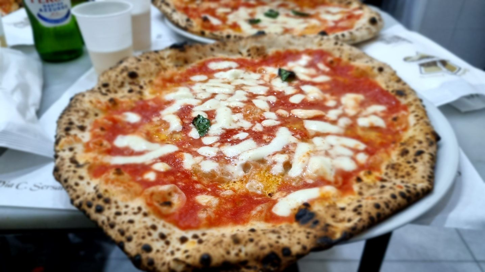

Z cest
Neapol: osm návštěv a jedna karta, která to celé mění
Poprvé jsem byl v Neapoli někdy v roce 2015 a od té doby asi sedmkrát. Základ tohohle textu je z té první cesty, takže spousta věcí se změnila — u těch to píšu. Ale spousta jiných se nemění vůbec.
U Artecard si aktuální podmínky ověřte, to je jediná věc, kterou bych nebral z desetiletého zápisku.
Letenka
Z Katowic, případně z Bratislavy nebo Vídně, Wizzairem nebo Ryanairem. Zpáteční letenka od zhruba 1 000 Kč.

Z letiště do města
Letiště je malé, venku jste za pět minut. Autobusy do centra najdete tak, že z východu půjdete asi tři sta metrů rovně — jsou tam šipky. Jede tudy Alibus za pět eur — cena se nezměnila. Devadesátiminutovou platnost s přestupem na metro si ale radši ověřte na místě: ANM dnes Alibus prodává jako jízdenku na jednu jízdu a běžné městské jízdenky na něj neplatí.
Já vystupuju na hlavním vlakovém nádraží, tedy na první zastávce — hlavně kvůli koupi Artecard.
Zpátky se dostanete buď na Artecard, pokud vám ten den ještě platí, nebo si u vstupu do metra koupíte stejný lístek na Alibus.
Nenechte se poslat do trafiky. Na informacích nám tvrdili, že jízdenku na Alibus koupíme v jakémkoliv tabáku. Obešli jsme čtyři a v žádném nebyla. Nakonec ji měli až u vstupu do metra.
Artecard
Prodává se přímo na nádraží — je to označené jako info, napravo, když vejdete hlavním vchodem od nástupišť.
Koupil jsem si kartu pro celou Kampánii na tři dny za 32 eur. V roce 2026 stojí stejná karta (Campania 3 giorni) 41 eur, varianta jen pro Neapol 27 eur; do 25 let jsou zvýhodněné verze za 30, resp. 16 eur. V ceně byla veškerá doprava po Neapoli — metro, autobusy, lanovky, prostě všechno — a k tomu vlaky. Dojel jsem na ni do Sorrenta a odtud autobusem do Positana, jindy vlakem do Caserty. Vstup do dvou památek zdarma, na třetí padesát procent, na další slevy. A doprava zpátky na letiště.
Pro mě se vyplatila stoprocentně.
Dvě pasti, na které pozor.
Karta se aktivuje prvním průchodem metrem. A neplatí 72 hodin od aktivace, ale jen do půlnoci třetího dne. Chce to plán. Když se vám první den nevyplatí, kupte si na ten den obyčejnou jízdenku za euro — prodává se za rohem vedle prodejny Artecard, je tam sázková kancelář.
A druhá věc: na trajekty na ostrovy neplatí. Na městskou dopravu na Ischii a Procidě ano, na Capri ne.
Ubytování
V devadesáti procentech návštěv jsem bydlel v okolí ulice Via Toledo. Je to bezpečné, žije to tam dlouho do noci, je tam spousta dobrých restaurací a odsud dojdete pěšky jak k moři, tak do starého města.
Ubytování u nádraží je trochu „tmavší", zato levnější. Nikdy jsem tam ale neměl problém a je to blízko na autobus na letiště i k vlakům.
Z první cesty: hotel Toledo, asi dvě stě metrů do uličky vedle obchodní třídy. Poloha naprosto ideální, pokoj malý ale v pohodě — a nejhorší snídaně, jaké jsem kdy na hotelu zažil. I tak bych se tam ubytoval znovu, nebo bych aspoň volil něco ve stejné lokalitě a ceně.
Program po dnech
Neděle — jen tak do ulic
Přijel jsem na hotel kolem třetí a pak vzhůru do ulic, vlastně jen na Via Toledo.
Tolik lidí v ulicích v neděli odpoledne u nás nepotkáte ani v obchodních centrech. Řekl bych, že devadesát devět procent byli místní — italské rodiny, které se sejdou v počtu desítek osob a jen tak si dají kafe a klábosí. Paráda. Došel jsem až dolů k moři a jen nasával atmosféru jižních států.
Po cestě jsem musel hned zkusit kafe — řekl bych, že ještě lepší než v Římě. Všude mají nahřáté hrnky, tak pozor, ať se nespálíte. K tomu zmrzlina a kornout se smaženými mořskými plody, postupně a s přestávkami. Večer margarita a džbánek vína. Excelentní.
Pondělí — Positano
Metrem na hlavní nádraží, pak vlakem do Sorrenta. Vlak do Sorrenta odjíždí ze spodního, „sklepního" nástupiště, ne z hlavního nahoře — je to nástupiště číslo tři, předposlední. Jede směrem na Pompeje a Sorrento je konečná.
V Sorrentu stojí přímo před nádražím autobus na pobřeží Amalfi, v ceně Artecard. Vypadá to, že čeká na příjezd vlaku a do patnácti minut vyjíždí. I mimo sezónu na něj ale může čekat dost lidí.
V Positanu vystupte na první zastávce, ta je nahoře na kopci — ušetříte si cestu vzhůru po mnoha a mnoha schodech. Pak sejdete dolů na pláž, pár fotek (jedny z nejhezčích v celé Itálii), někde si sednete na kafe nebo Aperol a z dolní zastávky zase zpátky.
Na tenhle výlet stačí půlden. Můžete ale pokračovat autobusem do města Amalfi, je to asi pětačtyřicet minut, autobus staví přímo v centru a městečko obejdete za hodinku. Nebo to spojte s Pompejemi — vlak staví pár metrů od vchodu a máte z toho výlet na celý den.
Po návratu jsem stihl ještě hlavní muzeum, které mi jako první památka na Artecard vyšlo zdarma. Je v něm spousta soch z Pompejí a stojí za to. Leží na konci Via Toledo, od hotelu dvacet minut pěšky.
Úterý — poučení z chyby
Rozhodoval jsem se mezi Procidou a neapolskými Versailles v Casertě. Kvůli rozpočtu — trajekt stál myslím 27 eur — jsem zvolil Casertu.
Špatná volba: v úterý je zavírací den — a platí to dodnes. Stejně tak zavírá hlavní archeologické muzeum v Neapoli a řada dalších státních památek, takže pokud vám úterý padá do platnosti Artecard, naplánujte si ho jako den bez muzeí. Hodinová cesta vlakem, tentokrát z velkého horního nástupiště, tak vedla k poznání, že zámek zvenku působí velkolepě.
Z pozdější návštěvy vím, že park je opravdu pěkný — tři kilometry k vodopádu na konci a tři zpátky. U vstupu nám řekli, že samotný park koupit nejde, tak jsme zaplatili i zámek. V parku ale běhalo pár místních, takže pochybuju, že platili dvanáct eur. Dnes už to řešit nemusíte: vstupenka jen do parku stojí tři eura, kombinovaná do zámku i parku šestnáct.
Odpoledne jsem vyjel lanovkou na hrad nad městem. Vnitřek jsem měl v rámci Artecard, ale vyhlídka na Neapol je krásná i bez vstupu do hradu. Uvidíte, jak je to město obrovské.
Až při další návštěvě jsem zjistil, že se dá vylézt ještě výš na hradby, kde je vyhlídka lepší. Vstup je brána v půlce kopce, asi dvě stě metrů před hradem, byla tam cedule nějakého ministerstva. Platí se, nevím kolik.
Středa — zpátky na letiště
Počasí mi přálo: třetí týden v únoru, kolem sedmnácti stupňů, sluníčko nebo mraky. Na oblečení stačila mikina.
Ostrovy
Trajekty jezdí ze dvou míst vzdálených asi kilometr od sebe. Blíž k Via Toledo stojí rychloloď, dál podél vody ta pomalejší a levnější — počítejte v roce 2026 spíš kolem třiceti eur za zpáteční na trajektu a víc na rychlolodi.
Při cestě na Ischii loď stavěla i na Procidě. Ptali jsme se, jestli můžeme vystoupit a pokračovat dalším trajektem na jeden lístek. Nejde to, lístky se musí koupit zvlášť.
Na Ischii jezdí z přístavu okružní autobus CS, v ceně Artecard nebo za 3,60 eura na celý den. Jeli jsme na druhou stranu ostrova do Sant’Angelo — poznáte to podle toho, že tam má autobus točnu. Byl tam klid a pěkné fotky. Jinak je na Ischii dost lidí; v létě bych to asi vynechal a i tak bych vzhledem k ceně trajektu váhal. Z přístavu se ještě vyplatí jet sedmičkou ke Castello Aragonese, to je moc pěkné.
Kde jsem jedl
Sorbillo — pizzerie, kde měla údajně vzniknout pizza margherita. Určitě stojí za to, ale buďte připravení na dlouhou čekačku: u dveří nahlásíte jméno a čekáte, až vás zavolají. Já čekal v únoru asi pětadvacet minut. Kolem jsou krámky, kde je kelímek prosecca za dvě eura, takže se čeká líp.
Di Matteo — stejná ulice, stejně výborná pizza a o dost menší čekačka, spíš vůbec žádná. Tuhle ulici v Neapoli nevynechejte, je plná restaurací a obchůdků. Pro mě asi nejhezčí ulice ve městě.
Hodně se zmiňuje i Michele, kde jedla Julia Robertsová ve filmu Jíst, meditovat, milovat. Napoprvé jsem to vzdal, čekačka byla snad na dvě hodiny. Při pozdější návštěvě jsem tam byl — pizza výborná, ale mají jen asi tři druhy a lepší než v Di Matteo to není.
7 Soldi — vedle Via Toledo vpravo, výborná domácí kuchyně. Byl jsem tam dvakrát a doporučuju.
Il Gobbetto — o kus níž, skoro na konci Toleda doprava, a za poloviční ceny. Těstoviny od šesti eur, sedmička vína za tři, výborný předkrm za osm, kterým se najedí dva.
Aktualizace 2026: Il Gobbetto má už několik let po sobě Michelin Bib a bez rezervace se tam nejspíš nedostanete — v pondělí mají zavřeno a v neděli jen oběd. Ceny jsou vyšší než při první návštěvě, ale pořád velmi slušné. Rozhodně doporučuju.